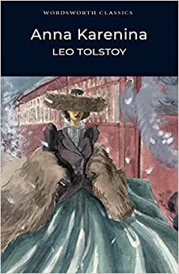
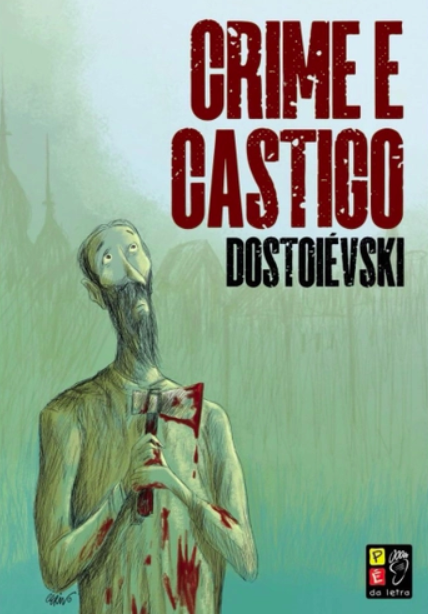

Gênero Romance
Romance é um gênero textual que consiste em uma narrativa longa, escrita em prosa. Seu surgimento e popularidade remete ao século XVIII, quando ele tomou o lugar das epopeias (longas narrativas em verso).
Por tratar-se de uma narrativa, o romance possui uma ação, lugar onde ela ocorre, tempo em que ela acontece, personagens que a realizam, uma trama e um ponto de vista, isto é, a perspectiva do narrador.

Anna Karenina, de Leon Tolstoi
Primeira edição foi lançada em 1877, com o final que Tolstoi desejava, depois de ter sido publicado em capítulos.
Em uma trama de família, fidelidade, sociedade, hipocrisia e contraste da vida no campo com a cidade, a personagem-título tenta ajudar seu irmão e cunhada, enquanto ela mesma precisa tomar decisões entre seu marido, o servidor público do governo russo Alexey, e o amante, o oficial Vronsky.

Cem Anos de Solidão, de Gabriel García Márquez
Considerado o maior romance latino-americano, narra a trajetória da família Buendía ao redor do fictício vilarejo de Macondo.
Com toques fantásticos, o autor explora momentos que definem a realidade latina: a influência de governos ditatoriais, roubo de propriedade, totalitarismo, o embate do explorado contra seu explorador e o machismo.

Crime e Castigo, de Fiódor Dostoiévski
A ideia do autor era exibir o relato psicológico de um crime, mas acaba abordando a pobreza, o alcoolismo e as condições dos trabalhadores explorados nas grandes cidades.
Raskólnikov é um rapaz orgulhoso e dado à observação humana que precisa interromper seus estudos por falta de dinheiro. Desdenhando da moralidade do homem comum, ele julga ter o direito de cometer um crime para retomar sua vida.
Quais são os subgêneros do terror?
Agora que você já apresentei meus livros de terror preferido, que tal saber um pouco mais sobre os subgêneros dessa categoria?
Romance polifônico
O foco narrativo está sobre várias personagens. Um exemplo é o romance Crônica da casa assassinada, de Lúcio Cardoso (1912-1968), que concede o protagonismo a várias personagens.
Romance fechado
O narrador fornece todas as informações, não deixa espaço (abertura) para a imaginação dos leitores.
Romance aberto
Nem tudo é expresso, o narrador deixa lacunas a serem preenchidas pelos leitores. Como, a misteriosa acusação que sofre Josef K., personagem do romance O processo, de Franz Kafka (1883-1924).
Romance psicológico
Está centrado no funcionamento da mente humana, nos pensamentos do narrador ou das personagens, na forma como eles entendem o mundo exterior. É caracterizado, portanto, pela análise psicológica e pelos fluxos de consciência.